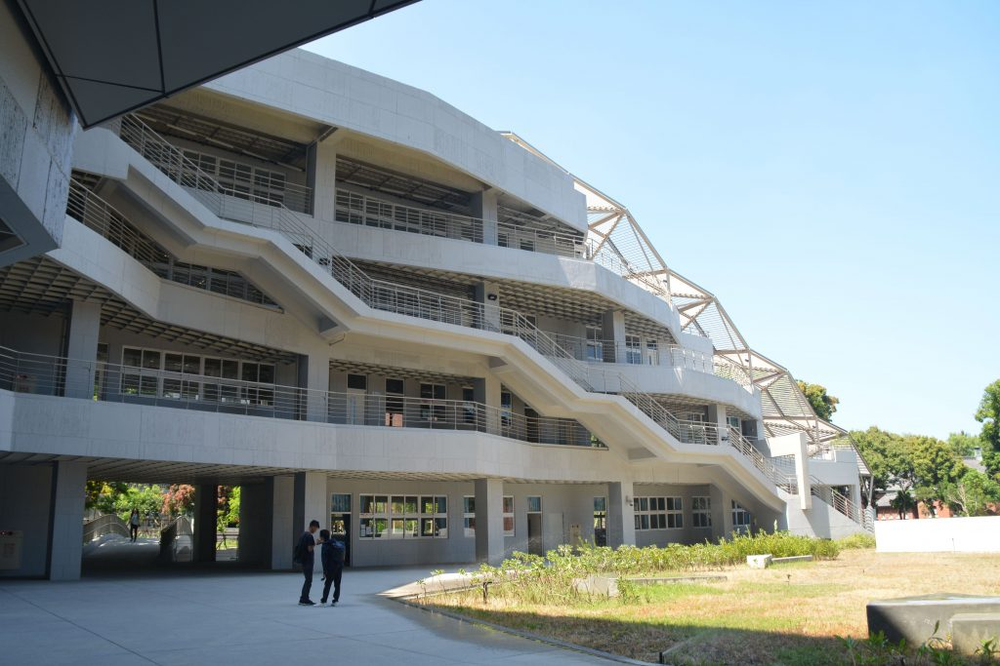

系所簡介
本校於民國七十年奉准增設醫學院，在籌備醫學院的過程中，夏漢民前校長當年以醫學最先進的美國為師，籌劃學士後醫學系，作為成功大學培養醫師科學家的搖籃，瞭解首要之務便在於創建一個學系，培養生物醫學相關的大學生，在籌設過程中原以「醫學生物系」為系名，爾後於民國七十一年奉准設立「生物學系」成為本校第一個生物科學領域的學系。學系創立之初，學生俱為一時之選，爾等亟思有所作為，引進生物醫學相關知識於成大校園之中，並創立系刊名為「先驅」，並獲得夏前校長題字。之後更著重於基礎生物科學與生物科技的多方位的教學與研究。並於民國八十二年成立碩士班，陸續於民國八十八年成立博士班，成為系、所合一(大學部與研究所)的全備學系，由本系教師全力支援相關之研究與教學任務。
近數十年來生命科學蓬勃發展，生物科技產業日新月異，本系有鑒於未來生物科學之發展趨勢，參考國內外知名大學生物教學之整合與改革，於民國九十三年更名為「生命科學系」，以培養基礎生物科學、現代生命科學與生物科技，及生物多樣性兼備的人才為宗旨。本系除了擁有規劃齊全的系館外，並有各種先進之儀器，以強化及充實各項教學及研究，培養一流的生物科技人才。此外，本系由已故楊豐誠同學及郭士德同學之父母捐贈之「楊豐誠同學紀念獎學金」及「郭士德同學紀念獎學金」，每學期提供給4名大學部學生，每名新台幣伍仟元，以鼓勵同學努力向學。另有本系退休教授提供「麥愛堂教授助學金」予清寒學子，每名伍仟元，以協助本系學生求學。
本系除了擁有規劃齊全的系館外，並有各種先進之儀器，以強化及充實各項教學及研究，培養一流的生物科技人才。此外，本系由已故楊豐誠同學及郭士德同學之父母捐贈之「楊豐誠同學紀念獎學金」及「郭士德同學紀念獎學金」，每學期提供給4名大學部學生，每名新台幣伍仟元，以鼓勵同學努力向學。另有本系退休教授提供「麥愛堂教授助學金」予清寒學子，每名伍仟元，以協助本系學生求學。

國立成功大學生命科學系
系內目前有17名師資，在教師研究領域涵蓋生物醫學，基因體與生物科技，以及生態學。各學門領域間有密切的合作，以了解生物上細胞與個體運作的分子機制，與基因與環境的交互作用，以及最終極的分子與生物演化等問題。其衍生的知識，可以運用在人類疾病的原理與治療，以及農業生物科技上，裨益大眾。